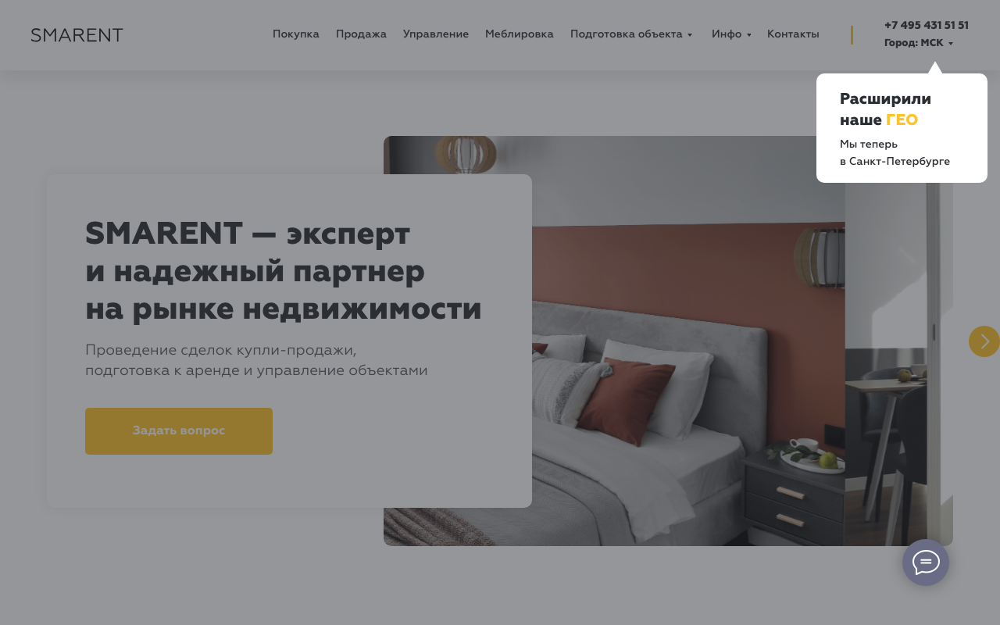

Собственник московской квартиры 35-55ИнвесторАрендатор среднего классаНовичок «купить или нет»
Главная работает как визитка компании, а не как развилка для 3 ICP. Hero «эксперт и надёжный партнёр» не закрывает ни одну боль (потеря дохода, риск порчи, поиск инвест-объекта), CTA в первом экране нет, proof-цифры из брифа (1100+ объектов, 4К+ районов) не используются.
Сегментация аудитории
1.0
Конверсионные сценарии
3.0
Первый экран · desktop 1280×800

Что не работает
- H1 «SMARENT - эксперт и надёжный партнёр на рынке недвижимости» - набор пустых слов, без числа и конкретного результата
- Subheading «Проведение сделок купли-продажи, подготовка к аренде и управление объектами» описывает ЧТО мы делаем, не какую проблему решаем
- ctas_count = 0: в первом экране нет ни одной кнопки действия
- Нет развилки под 3 ICP - все попадают в одну форму на 5 обязательных полей
- proof_numbers содержит только слово «объект» без цифры 1100+ из брифа
Что работает
- Has trust signal в первом экране (логика отображения присутствует)
- 30 внутренних service-ссылок - архитектура для развода трафика готова
- Программа лояльности и bundle уже подключены
Рекомендации (A/B-гипотезы)
Заменить пустой H1 на proof-driven по доходу собственника
Conversion
+12..20%
Low
Гипотеза: Если заменить hero «эксперт и надёжный партнёр» на конкретное обещание дохода с цифрой из брифа (1100+ квартир, выплата 1-го числа), то конверсия в заявку с главной вырастет на 12-20%, потому что собственник 35-55 ищет ответ на JTBD «получать аренду без личного участия и без риска неплательщиков», а не визитку компании.
Что меняем: Новый H1: «Сдаём вашу квартиру в Москве и переводим аренду 1-го числа - 1100+ объектов в управлении». Subheading: «Берём на себя поиск арендатора, заселение, оплату коммуналки и контроль состояния. Вы получаете деньги в срок, даже если арендатор задержал платёж».
H1: SMARENT - эксперт и надежный партнер на рынке недвижимости / Subheading: Проведение сделок купли-продажи, подготовка к аренде и управление объектами · hero h1
→ для: Собственник московской квартиры 35-55
Развилка hero под 3 ICP (3 карточки выбора)
Bounce
-15..25%
Medium
Гипотеза: Если под hero добавить блок «Что вам нужно?» с 3 карточками (Сдать свою квартиру / Купить под инвестиции / Снять квартиру), то bounce rate главной снизится на 15-25%, потому что 3 разных ICP получают релевантный путь вместо общего меню из 12 пунктов и формы на 5 полей.
Что меняем: Сразу под hero: 3 карточки 1/3 ширины. Карточка 1 - «У меня есть квартира - хочу сдавать без хлопот» -> /arenda. Карточка 2 - «Хочу купить квартиру под сдачу» -> /podbor. Карточка 3 - «Ищу квартиру в аренду» -> каталог арендаторов. На каждой карточке - 1 цифра из брифа (1100+ / 4К+ районов / гарантия выплаты 1-го числа).
persona_specific_h1_ratio = 0.0, dedicated_segment_pages_count = 0; в навигации 12 пунктов меню без приоритезации под персону · section.hero + section.audience-router (новый блок)
→ для: Все 3 ICP - сегментация трафика
Видимый CTA в первом экране
CTR
+8..14%
Low
Гипотеза: Если добавить в hero основной CTA «Рассчитать доход с моей квартиры» (ведёт на калькулятор/короткую форму на 2 поля), то конверсия первого экрана вырастет на 8-14%, потому что собственник получает действие до скролла, а не вынужден искать форму внизу страницы.
Что меняем: Кнопка в hero справа от H1: «Рассчитать доход с моей квартиры» (primary, accent-color). Вторая кнопка-link: «Посмотреть кейсы выплат». На клик - открывается шорт-форма (район + площадь + телефон), без обязательных 5 полей.
ctas_count = 0; cta_text пустой; форма требует 5 обязательных полей · hero .cta-primary
→ для: Собственник московской квартиры 35-55
Proof-полоса с цифрами из брифа
Time
+10..18%
Low
Гипотеза: Если под hero вывести 4 цифры (1100+ объектов / 4К+ районов в аналитике / выплата 1-го числа / 400К на YouTube), то time on page вырастет на 10-18%, потому что инвестор и новичок получают мгновенный сигнал доверия и листают дальше, а не уходят к конкуренту.
Что меняем: Полоса 4 ячейки сразу после hero: «1100+ квартир в управлении» / «4 000+ районов в аналитической базе» / «Выплата 1-го числа каждого месяца» / «400 000 подписчиков YouTube об инвестициях в недвижимость». Каждая цифра кликабельна - ведёт на соответствующий раздел (кейсы / аналитика / гарантия / YouTube).
proof_numbers = ['объект'] - на главной нет ни одной конкретной цифры из брифа · section.proof-bar (новый блок под hero)
→ для: Инвестор + Новичок «купить или нет»